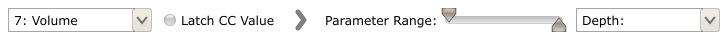
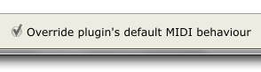

MIDI Mappings
Plugin parameters can be mapped to MIDI CCs via the add MIDI button in the plugin's Mappings Window. This page explains the various controls.
Mapping Parameters
When setting up a MIDI mapping, you are presented with the following parameters:

These are, from left to right:
MIDI CC: The MIDI CC to map to your plugin's parameter. Note the << MIDI Learn >> entry: when this is selected, the CC value will be automatically set to the next MIDI CC that the pedalboard receives.
Latch CC Value: This is for use with e.g. physical buttons which are momentary (they output an on signal while being pressed, and an off signal when not). Setting this control to on will mean that your physical, momentary, button will act as a toggle button: push it once to send an on signal, push it again to send an off signal.
Parameter Range: These sliders let you set the range that the MIDI CC input is mapped to on the plugin. The top slider represents the lower limit of the range, and the bottom slider represents the upper limit. By default the sliders are set as shown above, which maps the full range of the MIDI CC value to the full range of the plugin parameter. Note that the sliders can be reversed to create an inverted mapping.
Plugin Parameter: The parameter of the plugin which is being mapped to a MIDI CC.
Plugins With Their Own MIDI Mappings
Some plugins will have their own, hard-coded MIDI Mappings already set up (e.g. MIDI CC #7 set to control the output volume). As this may prove undesirable in certain cases, you can tell the Pedalboard to override this behaviour by toggling the button at the bottom of the Mappings window:
